Texto 09 – Deriva continental e tectônicas de placas.
Conteúdo:: Deriva continental, Tectônica de placas, isostasia, Correntes de Convecção,
tipos de falhas tectônicas.
Objetivo: : Entender os processos de separação dos continentes terrestres por meio da teoria
da deriva continental e tectônica de placas.
Digite seu nome
Introdução
Na aula passada, conhecemos um pouco mais sobre a história do Planeta
Terra, sua formação através das eras geológicas e as características principais de suas camadas internas.
Na aula de hoje, veremos a dinâmica da litosfera e como os continentes se movimentam através das placas
tectônicas.
Ao final, você será capaz de reconhecer como funciona a defesa de uma hipótese científica, os tipos de falhas
tectônicas e a influência do movimento de convecção do interior do Planeta na superfície terrestre.
Questões para serem respondidas no caderno sobre o tema da aula de hoje:
1. Qual é o objeto de estudo da Geologia?
2. Qual teoria revolucionou o conhecimento sobre o movimento dos continentes na década de 1960?
3. Quem foi o primeiro a publicar um atlas moderno e qual foi o nome da obra?
4. Quais foram algumas das evidências usadas por Alfred Wegener para sustentar a hipótese da deriva continental?
5. O que foi descoberto com o uso de sonares após a Segunda Guerra Mundial que ajudou a confirmar a teoria das placas tectônicas?
6. O que são as correntes de convecção e qual o seu papel na teoria das placas tectônicas?
7. O que ocorre nos limites divergentes das placas tectônicas?
Uma descoberta científica importante sobre o Planeta Terra
Toda ciência é definida por seus métodos e seus objetos. O objeto da Geologia é o Planeta Terra e suas
dinâmicas.
Tudo começa com um problema a ser resolvido, um espírito com curiosidade sobre como os fenômenos funcionam,
muitas tentativas e erros e comprovações com base em fatos.
No caso do movimento dos continentes, há pouco tempo, na década de 1960, a teoria das placas
tectônicas
revolucionou o conhecimento até então produzido sobre a Terra.
Essa teoria descreve o movimento dos continentes, as forças responsáveis pela formação das montanhas,
vulcões e outros fenômenos relativos à dinâmica da litosfera.
Mas quando começou a construção dessa teoria?
Da observação do contorno dos continentes às primeiras hipóteses sobre o movimento das placas litosféricas
Hoje sabemos que a litosfera é composta por cerca de doze placas tectônicas, que estão em movimento,
deslocando-se, chocando-se ou deslizando-se umas sobre as outras na astenosfera, camada superior do Manto
terrestre.
A confirmação da hipótese da deriva continental demorou vários séculos. Provar que os continentes estão em
movimento não é uma tarefa fácil.
No final do século XVI, o cartógrafo Abraham Ortelius publicou o Theatrum Orbis Terrarum (Teatro do
Globo Terrestre), considerado o primeiro atlas moderno.
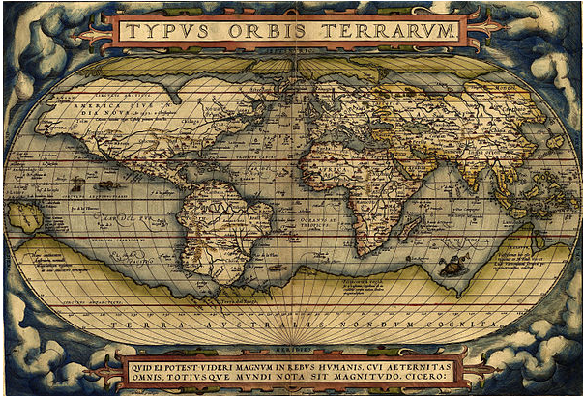
Fonte: Wikipédia.
Os cientistas então já afirmavam que os contornos da América do Sul e da África possuíam um encaixo
perfeito, sugerindo que tivessem formado, no passado, um único continente.
No século XVIII Benjamim Franklin se intrigava com os fluidos abaixo da crosta terrestre e afirmava que a
superfície da Terra seria como uma casca capaz de ser quebrada pelos movimentos desses fluidos no qual
repousa.
No século XIX, o geólogo austríaco Eduard Suess defendeu a hipótese de que os continentes da porção Sul do
globo (meridional) já haviam formado um único continente, chamado de Gondwana.
Somente no início do século XX, um meteorologista alemão, Alfred Wegener, após ler um artigo sobre fósseis
semelhantes encontrado na África e na América do Sul, decidiu retomar a hipótese da Deriva Continental. Ele
publicou um livro chamado: “A origem dos continentes e oceanos” em 1913, no qual defende seus argumentos com
algumas evidências:
O encaixe do litoral da África no contorno do litoral da América; (Evidência Morfológica). Os
continentes se encaixariam como em um quebra-cabeças, tanto na América do Sul e África, como na América
do Norte e Europa.
E a formação geológica e os tipos de rochas semelhantes também nesses dois continentes. (Evidência
Litológica).
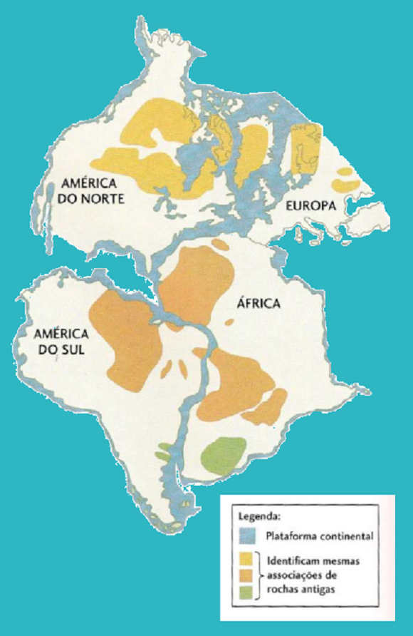
Fonte: Press (2006, p.48, adaptado).
A ocorrência dos mesmos tipos de climas, nos dois continentes; (Evidência Paleoclimáticas). Os depósitos
relacionados as geleiras existiam há 300 milhões de anos e puderam ser encontradas na América do Sul,
África, Índia e Austrália. A existência de uma única geleira poderia explicar todos esses depósitos,
mesmo recifes de algas coralíneas, datados do Paleozoico, foram encontrados no Círculo Polar Ártico,
sendo que esses corais são peculiares do Equador.
A existência de fósseis de animais nos dois continentes (África e América); (Evidência Paleontológica).
A foto abaixo destaca o réptil Mesossauro, encontrado no sul do Brasil, (recentemente na cidade de Três
lagoas em Santa Catarina foi descoberto um exemplar), também foi encontrado na África. Mesmo se o
Mesossauro pudesse cruzar oceanos nadando, ele teria chegado em outros lugares, o que não ocorreu. Sendo
assim, isso sugere que os continentes estavam unidos.
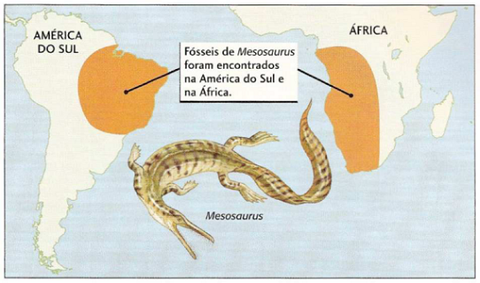
Fonte: Press (2006, p.49).
Quais são as forças que movimentam os continentes?
As evidências estudadas por Wegener o ajudou a provar que um dia existiu um supercontinente, que ele o
chamou Pangeia (do grego “todas as terras”).
Entretanto, o climatologista alemão não conseguiu convencer os cientistas sobre quais forças empurravam os
continentes. Após anos de debate, os físicos convenceram os geológicos de que as camadas da Terra eram muito
pesadas para que a deriva continental acontecesse.
Wegener faleceu em uma expedição na Groenlândia em 1930, antes que pudesse provar sua descoberta. Devido à
falta de tecnologia ele não conseguir explicar o que causava a fragmentação dos continentes. Ele chegou a
afirmar que os continentes eram arrastados pelas marés e pela força gravitacional da lua. Assim, sua
hipótese foi esquecida por muitos anos.
Um grande fato após a Segunda Guerra Mundial iria mudar essa história. Trabalhos com sonares.
e o mapeamento do assoalho oceânico, sobretudo para procurar submarinos submersos e riquezas minerais,
permitiu a descoberta de vales, verdadeiras montanhas e fendas na crosta debaixo d’água, a chamada Dorsal Meso-oceânica. Os
terremotos ocorriam próximos a essa fenda e um novo fundo oceânico se formava pela ascensão (elevação) de
uma nova crosta quente nessas fissuras.
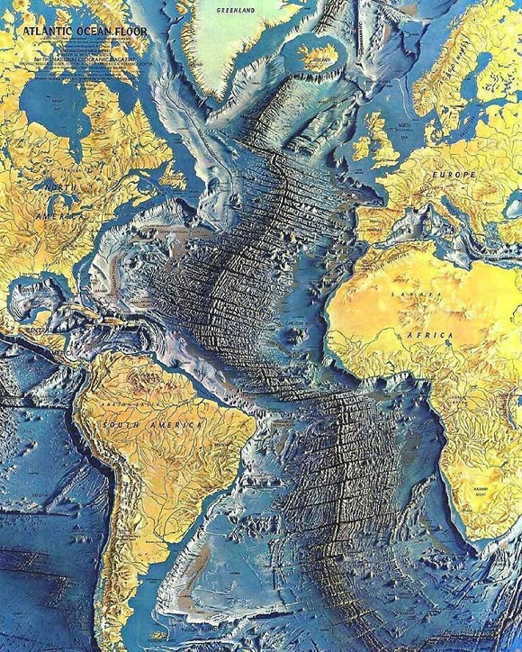
Fonte: Pinterest. Dorsal Mesoatlântica.
Dois cientistas americanos Hess e Dietz propuseram em 1962 que a crosta no meio do atlântico era formada por
fendas (rifts) e explicou como os continentes poderiam se separar. Após algumas outras pesquisas,
descobriu-se que a crosta surgia em um local e era destruída ou fundida em outra parte do manto. As
respostas só podiam estar nas diferenças de temperaturas do Manto, ou seja, nas correntes de
convecção. No final da década de 1960, as evidências eram tão robustas que foram aceitas por
todos os geocientistas.
Correntes de convecção
Nas regiões profundas do manto, as temperaturas são mais elevadas, o que provoca a ascendência dos materiais
em direção às áreas próximas da litosfera. Esses materiais ao chegarem perto da crosta, se resfriam e
mergulham novamente para o interior do manto. Essas correntes que movimentam lentamente as
placas tectônicas, as quais formam a crosta terrestre.
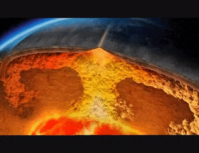
Nesse sentido, a Deriva Continental e a expansão do assoalho oceânico seriam uma consequência das correntes
de convecção. Veja a ilustração abaixo:
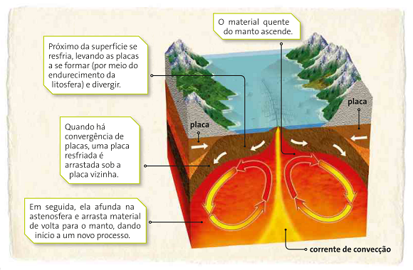
Fonte: Moreira e Sene (2016, p.115).
Teste o seu conhecimento!
Por que Alfred Wegener foi esquecido e até mesmo ridicularizado pela comunidade científica no início do
século XX?
As Placas Tectônicas e seus limites
A teoria das placas tectônicas surge para responder às questões deixadas pela teoria da deriva continental.
Hoje sabemos que a litosfera está fragmentada por placas e estas deslizam devido à movimentação das
correntes de convecção no interior da Terra.
O mapeamento do assoalho oceânico foi uma grande contribuição para o conhecimento sobre a superfície
terrestre. As placas são rígidas e flutuam sobre o manto.
A importância do estudo das placas tectônicas está relacionada, dentre outras coisas, à compreensão da
formação das altas cadeias montanhosas e dos abalos sísmicos (terremotos e maremotos, será visto nas
próximas aulas). Esses fenômenos estão ligados intimamente com o choque entre as placas.
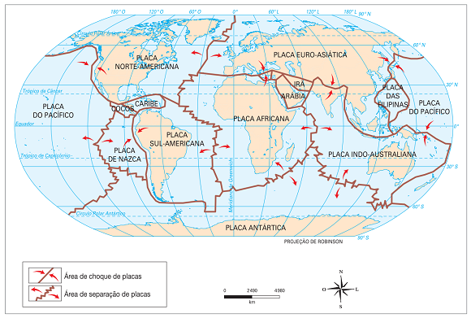
Fonte:: VESENTINI (2013).
Há mais de 50 placas tectônicas, as principais são:
Placa Euroasiática, predominantemente continental, apesar de incluir parte do Atlântico Norte;
Placa Africana, que inclui a África e parte do Atlântico Sul;
Placa Norte-Americana, que abrange parte do Atlântico Norte e quase toda a América do Norte;
Placa Sul-Americana, que inclui a América do Sul e parte do Atlântico Sul;
Placa Antártica, que inclui o continente antártico e uma imensa área oceânica;
Placa Indo-Australiana, que abrange boa parte do oceano Índico e da Oceania;
Placa do Pacífico, predominantemente oceânica;
Placa de Nazca, a oeste da América do Sul,
predominantemente oceânica.
Fonte: VESENTINI (2013, p.217).
As maiores são as placas do Pacífico e a Norte-Americana. Há placas pequenas como a de Juan de Fuca,
encravada no noroeste dos Estados Unidos, assim como a Placa Anatoliana, que inclui a maior parte da
Turquia.
É nos limites entre as placas que ocorrem os principais fenômenos naturais da crosta, como terremotos,
vulcões, formação de montanhas, rifts, dentre outros, dependendo da interação entre os limites. As setas da
figura acima indicam o seu movimento e os limites podem ser: divergente, convergente e transformante.
Teste o seu conhecimento!
Assinale todas as alternativas que satisfazem as principais evidências da hipótese da Deriva continental.
Os tipos de limites entre placas tectônicas
Limite divergente
Nos limites divergentes as placas se afastam e um nova litosfera é criada. Pode ocorrer tanto entre placas
oceânicas como em placas continentais.
As placas oceânicas. Ocorre um movimento de separação
de placas nos oceanos, ao longo das cadeias montanhas
no fundo do mar, chamada de dorsal Mesoatlântica. A velocidade de afastamento é de 2,5 cm por ano ou 25 km
em 1 milhão de anos.
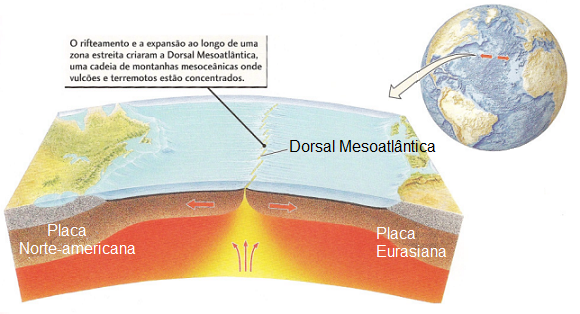
Fonte: Press (2006, p.54).
Na ilha da Islândia é possível observar
diretamente a separação da placa Norte-americana e a Eurasiana, uma
vez que esse país está situado na divisão dessas duas placas.
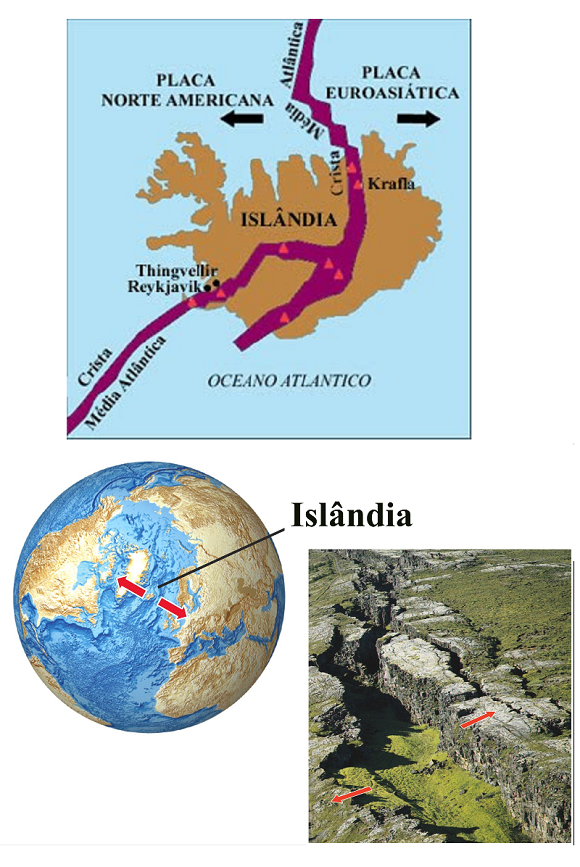
Fonte: Press (2006, p.54).
O vale em forma de fratura na foto, indica que ele foi preenchido com rochas vulcânicas recentes, uma
evidência do afastamento dessas placas.
A cadeia de montanhas da Dorsal Mesoatlântica corta o Planeta de Norte a Sul.
As placas continentais. No continente,
há separação por meio de rift (fratura) da crosta como no
Leste africano, formando vales, além do Mar vermelho e golfo da Califórnia.
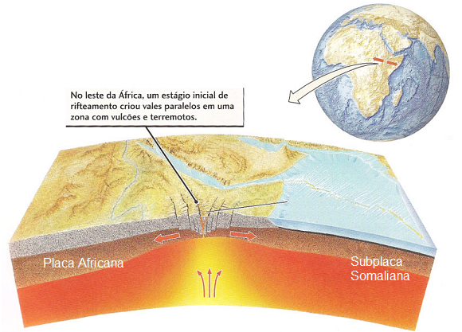
Fonte: Press (2006, p.54).
Segundo os geólogos esse é um sinal de
que essa região vai se separar do continente africano daqui a dezenas de milhões de anos.
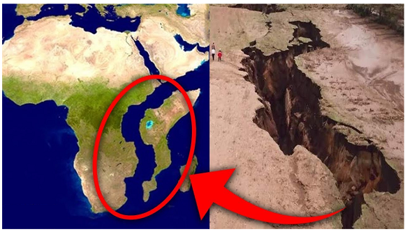
Limite convergente
Nesse tipo de limite as placas colidem frontalmente, sendo que uma delas é destruída ou reciclada, retornando
ao manto. Podem ocorrer choques nos oceanos, continentes e entre continente e oceanos.
Colisão entre duas placas oceânicas.
Uma placa mergulha sobre a outra em um processo chamado de subducção. A placa que está em
subducção afunda na astenosfera e é reciclada no manto. No local onde se produz esse fenômeno é criado uma
grande fossa de mar profunda, como as Fossas das Marianas no Oeste do Pacífico, onde o oceano atinge sua
maior profundidade de aproximadamente 10 km.
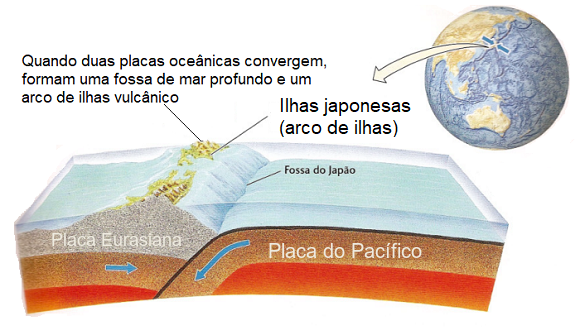
Fonte: Press (2006, p.52).
Quando uma placa oceânica encontra uma placa continental, a placa oceânica entre um subducção e um cinturão
de montanhas vulcânico é formado na margem da placa continental.
Isso ocorre porque a placa continental é mais leve (menos densa) e não afunda facilmente. Ocorre um
enrugamento na borda da placa continental e surge um cinturão de montanhas paralelo à fossa de mar que se
formou.
Essa área é propensa terremotos devido ao choque entre essas placas. A costa oeste da América do Sul, em que
a placa Sul-Americana colide com a Placa de Nazca é uma zona de subducção.
O resultado disso é a formação da cordilheira dos
Andes
, uma grande cadeia de montanhas paralelas com vulcões ativos, como o Nevado del Ruiz na Colômbia, que
entrou em erupção em 1985 e deixou 25 mil mortos.
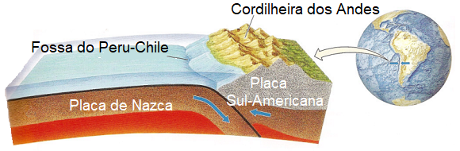
Fonte: Press (2006, p.52).
Colisão entre duas placas
continentais. Aqui não ocorre o processo de subducção pelo fato de as placas
continentais possuírem a mesma densidade. O resultado é o choque entre placas, como o da Placa Eurasiana e a
Placa Indiana, o qual cria uma crosta com uma espessura dupla, formando a cordilheira de montanhas mais alta
do mundo, o Himalaia e o planalto do Tibete. Nessas regiões os terremotos são violentos devido a tensão que
há entre as placas continentais.
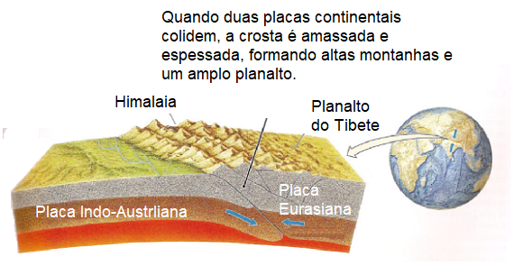
Fonte: Press (2006, p.52).
Limite transformante
Nos limites transformantes as placas deslizam horizontalmente uma em relação à outra. A placa permanece
constante, não é nem produzida ou destruída.
A falha de San Andreas (Santo André), na
Califórnia, EUA, é a mais famosa de todas. Há um deslocamento horizontal entre a Placa do Pacífico e a Placa
Norte-Americana. Grandes terremotos, como o que ocorreu em 1906 em São Francisco podem ocorrer nos limites
de placas desse tipo.
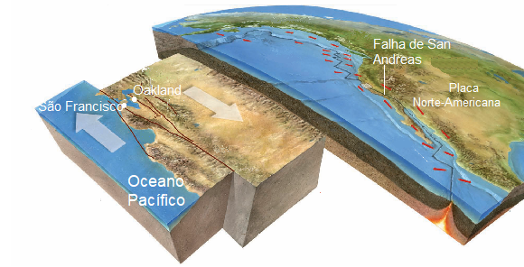
Fonte: Britannica (2008 p.23, adaptado).
Na realidade, os limites entre placas tectônicas podem combinar entre si. Por exemplo, a Placa
Norte-Americana é limitada a Leste pela Dorsal Mesoatlântica, que é uma área de limite divergente; a Oeste
pela falha de Santo André e outros limites transformantes; e, finalmente, a Noroeste, por zonas de
subducção.
Teste suas habilidades!
Leia o trecho da reportagem abaixo e análise a imagem para responder à questão:
Erupção na Islândia pode marcar o início de décadas de atividade vulcânica
A primeira erupção na península de Reykjanes após cerca de 800 anos não deve ameaçar nenhum centro
populacional, mas oferece uma oportunidade única para estudar os mistérios geológicos da região.
Após ser abalada por 15 meses de terremotos cada vez mais perturbadores, incluindo cerca de 50 mil nas
últimas três semanas, a península de Reykjanes, na Islândia, está finalmente passando pela erupção vulcânica
prevista por muitos geólogos. Depois de quase 800 anos sem uma erupção, os rios de lavas, previstos há um
bom tempo pelos especialistas, estão escorrendo por essa região no sudoeste do país.
Em 19 de março, por volta das 20h45 no horário local, o magma supitou. à superfície em um
vale próximo a Fagradalsfjall, uma montanha de topo plano na região de Geldingadalur, a quase 10 quilômetros
da cidade mais próxima. Respingos incandescentes brotavam de uma rachadura, queimando o solo enquanto
pequenas fontes de lava iluminavam a paisagem escura.
A erupção envolve uma quantidade relativamente pequena de lava confinada a uma série de vales, minimizando o
risco a qualquer centro populacional. Devido à grande fluidez desse tipo de rocha derretida, ao fato de que
os gases aprisionados escapam facilmente e de que a lava não está transbordando sobre a água ou o gelo, a
erupção não será muito explosiva, não expelirá uma nuvem de cinzas duradoura, tampouco arremessará blocos
vulcânicos consideráveis pela região. Cientistas acreditam que a erupção persistirá por mais alguns dias ou
semanas antes de desaparecer. Fonte: Erupção... (2021).
Escreva em seu caderno quais as razões para a ocorrência desse fenômeno geológico na
Islândia e qual o tipo de processo tectônico envolvido.
Não existe pergunta boba! A Ciência é feita de perguntas!
P:Qual a relação entre placas tectônicas e
vulcões?
R: A maior parte da crosta terrestre foi formada pelo extravasamento do
magma através de vulcões. As placas são movidas, como já vimos, pela convecção do manto, isto é, da energia
vinda do intenso calor do interior da Terra. As placas que mergulham no manto alcançam uma grande
profundidade podendo chegar até próximo do núcleo. Isso indica a existência de todo um sistema integrado.
Com as correntes de convecção voltam para cima (ascendem) elas podem trazer consigo verdadeiros “jatos” do
manto que precisam sair por algum local. Esse local são os vulcões como no Havaí, Chile ou Islândia.
P: Como a expansão do assoalho oceânico comprovou
a teoria da tectônica de placas?
R: A expansão do assoalho foi uma das evidências para a comprovação de uma
teoria maior relacionada a tectônica de placas. Ao investigar o fundo dos oceânicos foi descoberto que as
rochas próximas à
Dorsal eram mais jovens, enquanto as rochas mais afastadas da dorsal eram mais velhas. As rochas guardam
informações magnéticas do campo terrestre quando são formadas e de acordo com os minerais com o qual são
constituídas.
P: Existe placas tectônicas em outros
planetas?
R: Um cientista da Universidade da Califórnia em Los Angeles (UCLA), nos
EUA, anunciou a descoberta de placas tectônicas em Marte. Os resultados estampam a capa da edição de agosto
da revista "Lithosphere". Por muitos anos, pensava-se que essas estruturas geológicas localizadas logo
abaixo da superfície do planeta – cujos movimentos por aqui resultam em terremotos, tsunamis e erupções
vulcânicas – fossem exclusivas da Terra. Ao todo, nosso globo tem sete placas principais e outras dezenas
menores, comparadas a uma "casca de ovo" rachada, que nos protege do magma contido no interior.
Segundo o professor de ciências espaciais e da Terra Um Yin, único autor do estudo, o planeta vermelho está
em um estágio primitivo desse fenômeno, o que pode ajudar a entender como ocorreu a formação desses blocos
na nossa litosfera, composta por duas camadas: a crosta terrestre e o manto superior.
Fonte: http://g1.globo.com
/ciencia-e-saude/noticia/2012/08/
PRESS, F.; GROTZINGER, J.; SIERVER, R.; JORDAN, T. H. Para entender a Terra. 4ª ed. Porto
Alegre: Bookam, 2006.
SENE, Eustáquio de; MOREIRA, João Carlos. Geografia geral e do Brasil: espaço geográfico e
globalização: ensino
médio 3. ed. São Paulo: Scipione, 2016.
TEIXEIRA, W.; FAIRCHILD, T. R.; TOLEDO, M. C. M.; TAIOLI, F. Decifrando a Terra. 2ª ed. São
Paulo: Companhia
Editora Nacional, 2009.
VESENTINI, José William. Geografia: o mundo em transição. ensino médio. 2.ed. – São Paulo:
Ática, 2013.